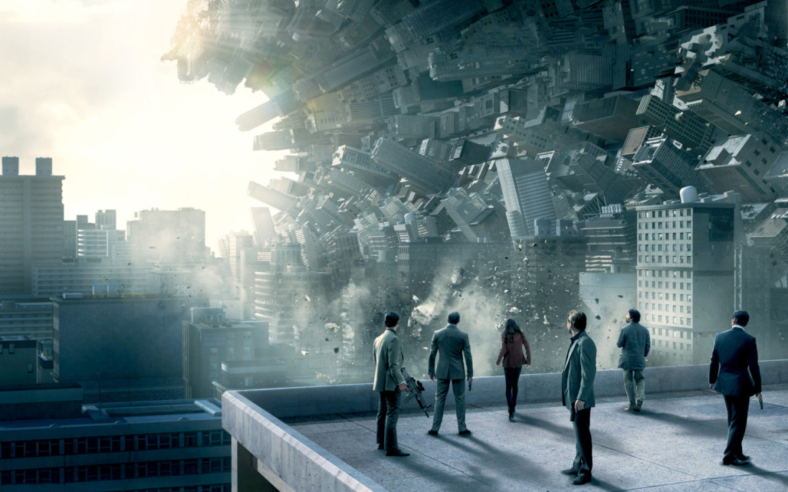
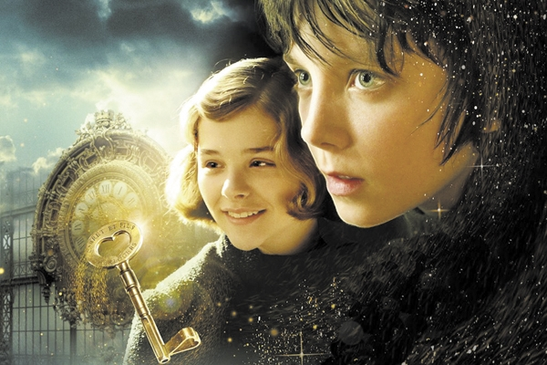
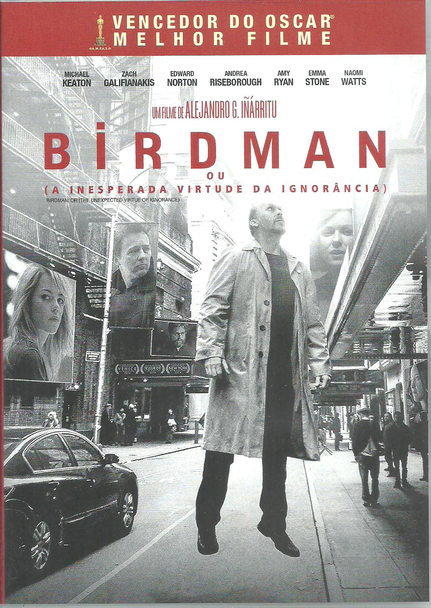
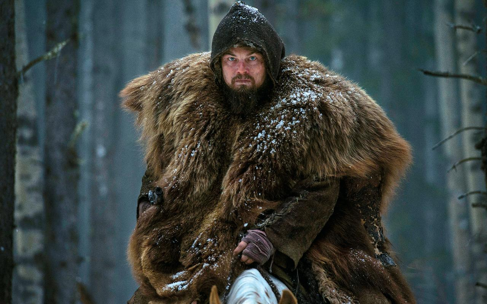

Vencedor 2011
A Origem
A Origem

Ano: 2010
País de origem: Estados Unidos, Reino Unido
Direção: Cristopher Nolan
Elenco: Leonardo DiCaprio, Ken Watanabe. Joseph Gordon-Levitt
Gênero: Aventura, Ação, Suspense
Música: Hans Zimmer
Classificação: 14 anos
Duração: 148 min

Vencedor 2012
Hugo Cabret
Hugo Cabret

Ano: 2011
País de origem: Estados Unidos
Direção: Martin Scorsese
Elenco: Ben Kingsley, Sacha Baron Cohen e Asa Butterfield
Gênero: Aventura, Mistério, Drama, Família
Música: Howard Shore
Classificação: Livre
Duração: 126min
Vencedor 2013
As Aventuras de Pi
As Aventuras de Pi

Ano: 2012
País de origem: Estados Unidos
Direção: Ang Lee
Elenco: Suraj Sharma, Irrfan Khan, Adil Hussain
Gênero: Aventura
Música: Mychael Danna
Classificação: 10 anos
Duração: 127 min
Vencedor 2014
Gravidade
Gravidade

Ano: 2013
País de origem: Estados Unidos, Reino Unido
Direção: Alfonso Cuarón
Elenco: Sandra Bullock, George Clooney, Ed Harris
Gênero: Drama
Música: Steven Price
Classificação: 12 anos
Duração: 91 min
Vencedor 2015
BirdMan
A Inesperada Virtude da Ignorância

Ano: 2014
País de origem: Estados Unidos
Direção: Alejandro González Iñárritu
Elenco: Michael Keaton, Zach Galifianakis e Edward Norton
Gênero: Comédia dramática
Música: Antonio Sánchez
Classificação: 16 anos
Duração: 119 min
Vencedor 2016
O Regresso
O Regresso

Ano: 2015
País de origem: Estados Unidos
Direção: Alejandro González Iñárritu
Elenco: Leonardo DiCaprio, Tom Hardy e Donhnall Gleeson
Gênero: Faroeste, Drama
Música: Ryuichi Sakamoto
Classificação: 16 anos
Duração: 156 min
Vencedor 2017
La La Land
La La Land

Ano: 2016
País de origem: Estados Unidos
Direção: Damien Chazelle
Elenco: Ryan Gosling, Emma Stone, John Legend
Gênero: Musical
Música: Justin Hurwitz
Classificação: 12 anos
Duração: 128 min
Vencedor 2018
Blade Runner 2049
Blade Runner 2049

Ano: 2017
País de origem: Estados Unidos
Direção: Denis Villeneuve
Elenco: Ryan Gosling, Emma Stone, John Legend
Gênero: Suspense, Ficção Científica
Música: Hans Zimmer, Benjamin Wallfisch
Classificação: 14 anos
Duração: 156 min